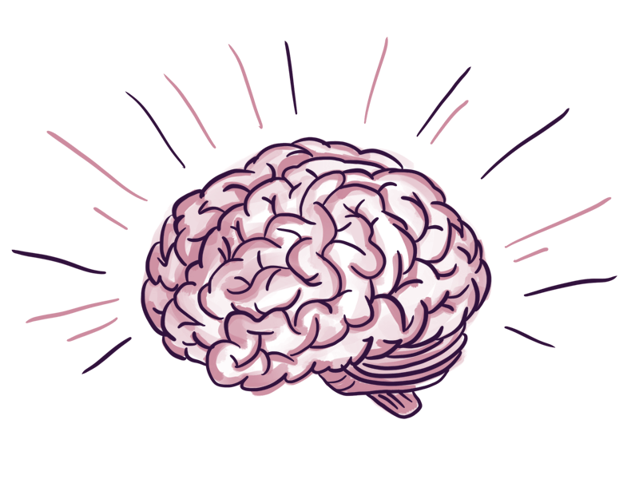

Punto en un triángulo
Propósito: Integración a nuestro conocimiento
Un objetivo planteado en este trabajo es evidenciar profundidad, alcance, riqueza del conocimiento
El conocimiento no se construye llenando una biblioteca, o enlistando ligas de la WWW
El conocimiento objeto se ha de integrar a nuestro conocimiento, previo, supuesto, o deseado, a modo de enriquecerlo y darle más significado
Conocimiento, nunca nadie tiene el mismo que nadie más. Siempre o en mayor medida, o muchas veces en menor medida, o con diferente color o sabor.
Y si la presentación del conocimiento es limitada, porque así se escogió, o porque quien la presenta así lo tiene, siendo consciente o no de esa limitación...
Quienes transmitimos un conocimiento hemos de, primero, integrarlo al nuestro propio, enriquecerlo con nuestras vivencias, a fin de pasarlo enriquecido.
¿Lo que estoy retransmitiendo es igual a lo que me llegó?
Igual manera que con los demás considerandos del aprendizaje significativo: habilidades, actitudes y valores
De veras hacerlo
 Hacer un programa de computadora que determine si un punto está adentro o fuera de un triángulo.
Hacer un programa de computadora que determine si un punto está adentro o fuera de un triángulo.
Concebirlo, editarlo, compilarlo, ejecutarlo
Aprender significativamente del proceso de resolución, adquieriendo técnicas aplicables a una multitud de contextos diferentes.
Obra publicada con Licencia Creative Commons Reconocimiento Compartir igual 4.0